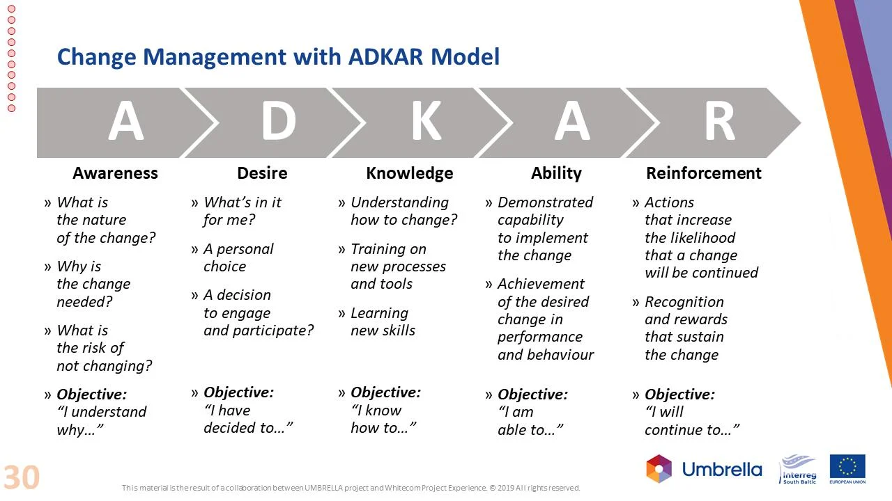
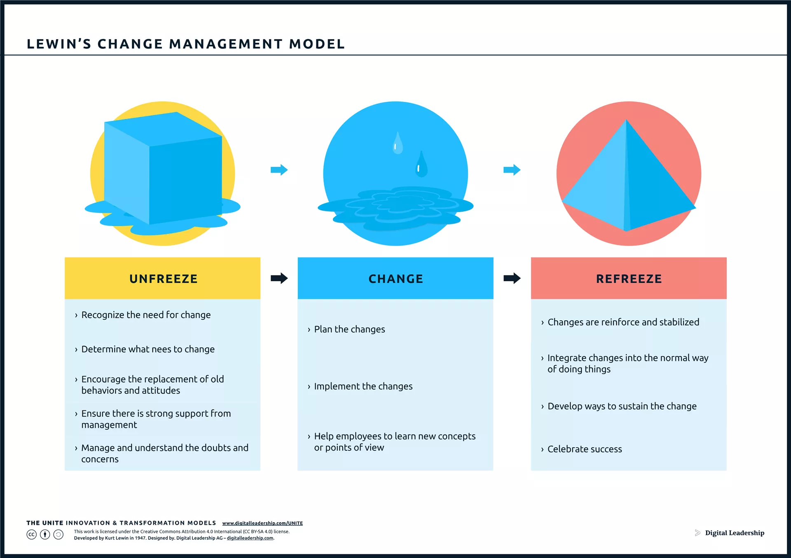
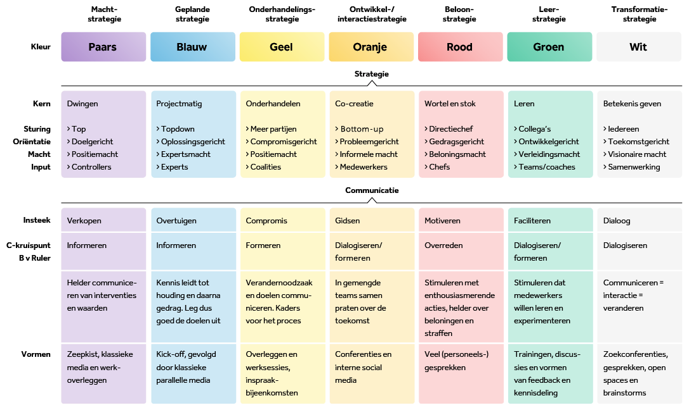
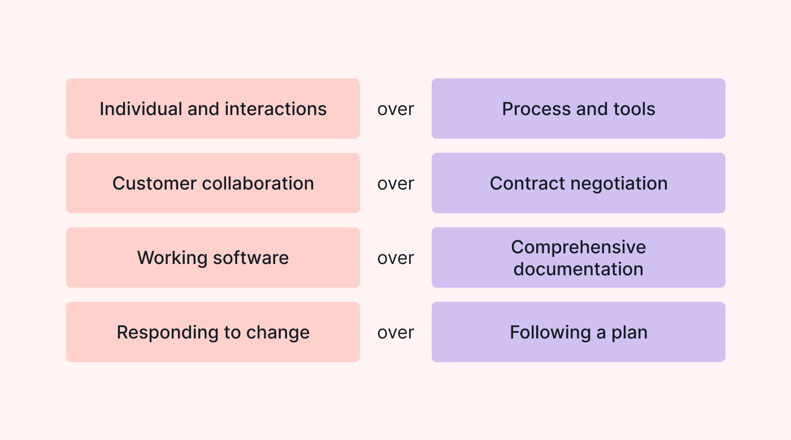
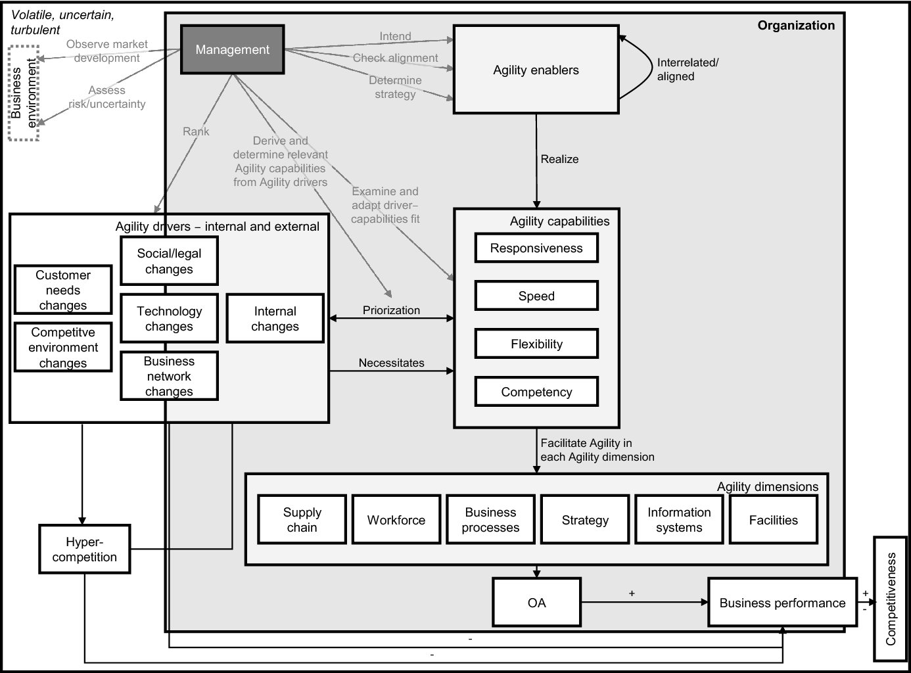
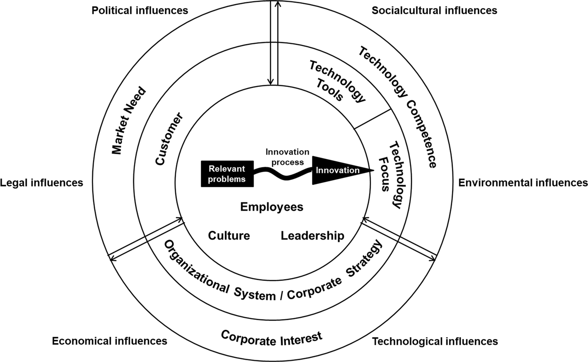

2 Introduction to Change Management and Organizational Agility
2.1 Introduction to Change Management
Change management is a crucial aspect of organizational development, focusing on the processes, tools, and techniques used to manage the people side of change to achieve desired business outcomes. This chapter explores three prominent models in change management: Kotter’s 8-Step Change Model, Prosci’s ADKAR Model, and Lewin’s Change Management Model.
2.1.1 Kotter’s 8-Step Change Model

John Kotter’s 8-Step Change Model is a widely recognized framework for managing change. It consists of eight distinct steps:
- Establishing a Sense of Urgency: Creating a sense of urgency to drive change is essential. This involves identifying and communicating a compelling reason for change.
- Creating a Powerful Coalition: Building a strong coalition of individuals who can drive change is crucial. This involves identifying key stakeholders and aligning them around the change vision.
- Creating a Vision for Change: Developing a clear, inspiring vision for change is essential. This vision should be communicated effectively to gain support and commitment.
- Communicating the Vision: Communicating the change vision and its benefits to all stakeholders is vital for success.
- Empowering Others to Act: Empowering others to act and take ownership of the change is essential. This involves providing resources and support to enable change.
- Planning for and Creating Short-Term Wins: Planning for and creating short-term wins is important to build momentum and maintain support for the change.
- Consolidating Gains and Sustaining Acceleration: Consolidating gains and sustaining acceleration is crucial to ensure the change is embedded and becomes the new norm.
- Institutionalizing Change: Institutionalizing change is essential to ensure the change becomes a permanent part of the organization’s culture.
2.1.2 Prosci’s ADKAR Model

Prosci’s ADKAR Model is another popular change management model that focuses on individual change. It consists of five key elements:
- Awareness: Building awareness of the need for change and the change vision.
- Desire: Developing the desire to support and participate in the change.
- Knowledge: Providing the necessary knowledge and skills to implement the change.
- Ability: Enabling individuals to effectively execute the change.
- Reinforcement: Reinforcing the change to ensure it becomes a habit and is sustained over time.
2.1.3 Lewin’s Change Management Model

Lewin’s Change Management Model, also known as the Unfreeze-Change-Refreeze Model, is a simple yet effective approach to change management. It consists of three stages:
- Unfreeze: This stage involves creating a sense of urgency and preparing the organization for change.
- Change: This stage involves implementing the change and making the necessary adjustments.
- Refreeze: This stage involves stabilizing the change and making it a permanent part of the organization’s culture.
2.1.4 Translating the Models into Each Other
While each model has its unique strengths, they can be translated into each other to provide a more comprehensive change management approach. For example, Kotter’s 8-Step Change Model can be seen as a more detailed version of Lewin’s Unfreeze-Change-Refreeze Model, with each step representing a different aspect of the change process. Similarly, the ADKAR Model can be seen as a more individual-focused approach, providing a framework for understanding and managing the personal aspects of change.
2.1.5 Managerial Guide for Applying Change Models
Change management models, such as Kotter’s 8-Step Change Model, Prosci’s ADKAR Model, and Lewin’s Change Management Model, provide valuable insights and frameworks for managing organizational change. However, these models should be adapted and integrated with the specific context of the change and the organization to ensure their effectiveness. Following are some key evidence-based change management principles to consider when applying these models in practice (Stouten, Rousseau, and De Cremer 2018).
| # | Principle | Description |
|---|---|---|
| 1 | Diagnosis Step #1 | Collecting detailed information to understand the need for change and pre-existing conditions. |
| 2 | Diagnosis Step #2 | Evaluating and addressing the organization's readiness for change. |
| 3 | Evidence-Based Interventions | Selecting effective change interventions based on evidence and stakeholder input. |
| 4 | Change Leadership | Developing leadership capabilities at all levels to support change. |
| 5 | Compelling Vision | Creating and communicating a clear, motivating vision for the change. |
| 6 | Social Networks | Leveraging social networks within the organization to facilitate change. |
| 7 | Enabling Practices | Implementing supportive structures and practices for effective change. |
| 8 | Micro-Processes | Encouraging experimentation and adjustment of change initiatives. |
| 9 | Assess Progress | Periodically evaluating the change to make necessary adjustments. |
| 10 | Institutionalize Change | Integrating the change into the organization's culture and systems for sustainability. |
2.2 Businesss Cases
2.2.1 Microsoft
Several valuable lessons about change management can be learned from Satya Nadella’s journey as CEO of Microsoft, as outlined in the video. Here are key takeaways and how they align with evidence-based change management principles:
Embrace Change and Innovation (Principle 3: Implement Evidence-Based Change Interventions): Nadella’s leadership at Microsoft highlights the importance of embracing change and pursuing innovation, especially with his focus on cloud computing and AI technologies. This principle emphasizes the need for organizations to adopt evidence-based interventions. Nadella shifted Microsoft’s strategy towards areas like cloud services and open-source software, demonstrating a willingness to adapt and reinvent the company based on emerging trends and data.
Focus on Mission and Culture (Principles 1 and 5): Under Nadella, Microsoft redefined its mission to “empower every person and every organization on the planet to achieve more.” This refocusing on mission and the subsequent cultural shift towards a “learn-it-all” rather than a “know-it-all” culture reflects the principles of diagnosing the need for change and formulating a clear, compelling vision. Nadella understood that for change to be sustainable, it had to be rooted in a strong sense of purpose and supported by a culture that values learning and growth.
Collaboration Over Competition (Principle 6: Work with Social Networks and Tap Their Influence): Nadella’s approach to partnerships and his decision to make Microsoft’s products available on competing platforms like iOS and Android demonstrate an understanding of the importance of leveraging social networks and collaborative ecosystems. By focusing on how Microsoft could contribute to and benefit from broader technological ecosystems, Nadella tapped into new sources of value and growth.
Empathy and Dialogue (Principle 10: Institutionalize the Change to Sustain Its Effectiveness): Nadella emphasized empathy and open dialogue within Microsoft. This approach to leadership and change management aligns with the principle of institutionalizing change, as it fosters an environment where continuous learning and adaptation become part of the organizational DNA. By valuing empathy and encouraging rich dialogue, Nadella worked to ensure that changes would be deeply embedded in Microsoft’s culture, leading to sustained effectiveness.
Navigating Future Challenges (Principle 9: Monitor Progress and Adjust Strategies as Needed): The video also touches on the challenges and opportunities presented by AI. Nadella’s focus on navigating the AI transition with responsibility and ethical consideration reflects the need for ongoing monitoring of progress and the willingness to adjust strategies based on new information and evolving circumstances.
2.2.2 Google
The social network experiment described in the video touches upon several key evidence-based change management principles, notably principles 1 and 3. Let’s explore how these principles relate to the described experiment.
Principle 1: Diagnosis Step #1
Description: Gathering detailed information to understand the need for change and pre-existing conditions.
Connection: The social network experiment conducted within Google aimed to understand the patterns of work-related advice-seeking among employees. This initiative represents a form of diagnosis where detailed information about internal social networks was collected. By identifying who employees turn to for advice, the company aimed to grasp the structure of informal networks, which is crucial for understanding existing collaboration patterns and potential areas for improvement. This principle directly applies here as the experiment sought to diagnose how social networks within the organization might influence performance, information flow, and ultimately, decision-making processes.
Principle 3: Implement Evidence-Based Interventions
Description: Choosing interventions based on a well-conducted diagnosis, considering internal and external expertise, stakeholder input, and scientific evidence to identify solutions that address diagnosed problems.
Connection: The identification of social network patterns allows Google to make informed decisions on interventions that could enhance collaboration, information sharing, and innovation across different segments of the company. For example, the findings could lead to creating cross-functional teams, redesigning physical workspaces to promote interactions among diverse groups, or developing programs that encourage networking beyond one’s immediate circle. This principle is exemplified by the proactive steps taken following the analysis, aiming to bridge the identified gaps and foster a more interconnected and collaborative culture.
2.3 Interventions

The original De Caluwe model for change management interventions is based on five different ways of thinking about change, each representing different beliefs systems and convictions about how change works, the kind of interventions that are effective, and how to change people. These five models are labeled by color: yellow, blue, red, green, and white.
Yellow-Print Thinking: This model is based on socio-political concepts about organizations, where interests, conflicts, and power play important roles. It assumes that people change their standpoints only if their own interests are taken into account or if they are compelled to accept certain ideas. Combining ideas or points of view and forming coalitions or power blocks are favored methods in this type of change process.
Blue-Print Thinking: This model is based on the rational design and implementation of change. It assumes that people or things will change if a clearly specified result is laid down beforehand. Controlling the change by managing, planning, and monitoring the progress is considered feasible. The process and the result are deemed, more or less, independent of people. Management is able to compel and effect the change.
Red-Print Thinking: This model has its roots in action-learning theories. It emphasizes the human factor in change and focuses on stimulating, attracting, compelling, and guiding people to change. The human being must be influenced, and the foremost consideration is that the human factor plays a vital role in change.
Green-Print Thinking: This model is based on action-learning theories and learning organizations. It emphasizes the importance of collective learning and the strengthening of learning abilities within the organization. The aim is to strengthen the learning abilities of the individual and the learning within the organization, which leads to different organizational behavior and change as a result.
White-Print Thinking: This model is based on the belief that “crisis provides opportunity.” It focuses on observing what is making things happen and change, supplying meanings and perspectives, removing obstacles, getting initiatives and explorations going, and empowering people while giving them sufficient free rein.
These models function as communication and diagnostic tools, providing a map of possible change strategies. Change agents can use these models to reflect on their own assumptions, competencies, and limitations, helping them to delineate their area of expertise and their professional development.
The model has significant implications for change agents and change processes.
Diagnosing Organizations: The model emphasizes the need to diagnose organizations from different colored viewpoints to be aware of imbalances. Change agents must understand the dominant paradigms within groups or organizations to effectively characterize the actors involved in a change effort.
Selecting Change Strategies: Different colored approaches can interfere with each other significantly. Change agents need to focus on a foundational color strategy that aligns with the organization’s context and issue at hand. Understanding the strengths and weaknesses of each color is crucial for selecting the most appropriate change strategy.
Managing Interferences: Change agents should be mindful of potential interferences between different colored actions. Strategies to deal with interferences include spacing out interventions in time or involving different people for different color interventions. Maintaining a constant underlying color tenet while allowing for contributions from other colors can be challenging but beneficial.
Matching Change Agents to Change Efforts: It is essential for change agents to align their approach with the nature of the change effort. Incongruence between the color of the change agent and the desired change strategy can impede progress. Ensuring that the change agent’s style matches the chosen color strategy is crucial for successful change implementation.
Facilitating Learning and Adaptation: The model underscores the importance of continuous learning and adaptation within organizations. Change agents should create settings for collective learning, support people in taking ownership of their learning, and foster a culture of continuous learning in collective settings. This approach allows for flexibility, experimentation, and growth within the organization.
By understanding these implications and applying them effectively in practice, change agents can navigate complex change processes more adeptly, tailor interventions to specific organizational contexts, and foster sustainable organizational development through strategic and thoughtful change management practices.
| Existing System - Knowledge | How Systems Change Over Time - Knowledge | How Systems Change Over Time - Skills |
|---|---|---|
| Organization behaviour A. Organization culture B. Work design C. Interpersonal relations D. Power and politics E. Leadership F. Goal setting G. Conflict H. Ethics |
Organization design Decision making process associated with formulating and aligning HR systems; information systems; reward systems; work design; political systems; culture; etc. A. The concept of fit and alignment B. Diagnostic and design model for sub-systems C. Key thought leaders in organization design |
Managing the consulting process A. Entry B. Contracting C. Diagnosing D. Designing interventions E. Implementation F. Managing emergent issues G. Evaluation |
| Individual psychology A. Learning theory B. Motivation theory C. Perception theory |
Organization research Field research; interviewing; content analysis; change evaluation processes; quantitative and qualitative methods |
Analysis/diagnosis Inquiry into the system’s effectiveness at an individual, group and organization wide level Ability to understand and inquire into one’s self |
| Group dynamics A. Roles B. Communication processes C. Decision-making process D. Stages of group development E. leadership |
System dynamics Understanding of how systems evolve and develop over time; how systems respond to planned and unplanned interventions; |
Designing/choosing appropriate and relevant interventions Understanding how to select, modify, or design effective interventions that will move the organization from its current state to its desired future state |
| Management and organization theory A. Planning, organizing, leading, and controlling B. Problem solving and decision making C. Systems theory D. Contingency theory E. Organization structure F. Characteristics of environment and technology G. Models of organization and system |
History of organization development A. Human relations movement B. National Training Lab C. Survey research D. Quality of life E. Tavistock Institute F. Key thought leaders G. Humanistic values H. Statement of ethics |
Facilitation and process consultation Ability to assist an individual or a group towards a goal Ability to inquire into individual and group processes so that the client system (organization) maintains ownership of the issue, increases the capacity for reflection on the consequences of its behaviours and actions, and develops a sense of increased control and ability |
| Research methods/statistics A. Measures of central tendency B. Measures of dispersion C. Basic sampling theory D. Basic experimental design E. Sample inferential statistics |
Theories and models of change A. Basic action research model B. Change topologies C. Lewin’s model D. Transition models, etc |
Developing client capability The ability to conduct a change process so that the client is better able to plan and implement a successful change process in the future, using technologies of planned change in a values-based and ethical manner |
| Comparative cultural perspectives A. Dimensions of national culture B. Dimensions of industry culture C. Systems implications |
Evaluating organization change The ability to design and implement a process to evaluate the impact and effects of change intervention, including control of alternative explanations and interpretations of performance outcomes |
|
| Functional knowledge of business A. Interpersonal communication (listening, feedback, and articulation) B. Collaboration/working together C. Problem solving D. Using new technology E. Conceptualizing F. Project management G. Present/education/coach |
From: Waddell et al. (2019)
Review the knowledge and skill requirements of the organization development practitioner, highlight the knowledge and the skills that you consider to be essential and produce a mini-personal development plan for those aspects you consider you need to develop.
2.4 Corporate Agility
2.4.1 Game “The King and His People”
In this game, the king visits his people. However, the king is lazy and wishes to sit down as soon as possible. The people, on the other hand, want to keep the king walking for as long as possible. This is healthy and allows him to meet new subjects.
The trainer is the king and selects one person from the group as his aide. The rest of the group represents the people. An equal number of chairs as there are common subjects, plus one extra, are placed around the space. The chairs are randomly distributed throughout the area with enough space between them to allow for movement.
When the game starts, all subjects are seated, and one chair is left empty. The king walks toward the empty chair. To prevent the king from sitting down, one subject stands up and attempts to occupy the empty chair before the king reaches it. However, this action leaves another chair empty, and the king proceeds towards it. Again, a subject stands up to occupy that chair, and so on.
Once the king has taken a seat, the round is over. The objective is to keep the king walking for as long as possible. After each round, the subjects may confer. The king and his aide then leave the room.
The following rules will be enforced by the aide:
- Only the aide communicates directly with the king and vice versa.
- The chairs remain in their initial positions.
- Everyone (including the king) moves in a dignified manner. There is to be no running, pushing, pulling, or blocking.
How effective was the group’s performance? To what extent did they facilitate clear and effective communication? How engaged and interconnected was each member of the group throughout the planning process? Which approach or strategy proved successful?
2.4.2 Organizational agility
In the swiftly evolving landscape of modern business, organizational agility stands out as a cornerstone for success. This concept captures a company’s proficiency in adjusting to both internal and external shifts, swiftly catering to customer needs, and spearheading changes that enhance culture, operational practices, and results. Central to agile methodologies is the Agile Manifesto, which prioritizes people and their interactions, functional products, collaborative customer relationships, and adaptability to change over rigid adherence to traditional processes and documentation.

Organizations that successfully integrate these agile principles and nurture an agile culture are better positioned to navigate market dynamics, enhance employee engagement, and secure superior business achievements.
The organizational agility conceptual map by Walter (2021) is designed to illustrate the key components and relationships within the concept of organizational agility (OA). The map is based on the original framework of Sharifi and Zhang (1999), which has been expanded and enriched with new insights. The map consists of four main categories:
- Agility drivers: These are environmental changes that put organizations in a new, vulnerable position and necessitate searching for competitive advantages. They include customer-driven agility drivers, external changes only, and external and internal changes.
- Agility capabilities: These are specific abilities for providing the required power and competence to react to changes. They include responsiveness, competency, flexibility, and speed.
- Agility enablers: These are the elements that help organizations realize their agility capabilities. They are the means by which agility capabilities are implemented in various agility dimensions.
- Agility dimensions: These are the various areas in which agility capabilities are implemented, such as supply chain, workforce, business processes, strategy, information systems, and facilities.

The map shows the relationships between these categories, with agility drivers inducing the need for agility capabilities of the organization, which are realized by agility enablers, and agility capabilities being implemented in various agility dimensions, resulting in an overall enhanced organizational agility level. An increased OA level of the organization can contribute to an increase in competitiveness.
The Extended Agile Front End of Innovation Framework Brand et al. (2021) proposes a comprehensive model to enhance agility in the initial stages of the innovation process. This framework integrates findings from literature review and qualitative expert interviews to identify and detail key agility enablers that influence the front end of innovation.
At its core, the framework emphasizes the significance of adaptability, customer focus, empowerment, collaboration, and continuous improvement as fundamental principles. These principles are derived from agile methodologies and tailored to suit the context of innovation management, particularly in the early phases where ideas are generated, evaluated, and developed into potential projects.
Adaptability: The framework underscores the importance of an organization’s ability to swiftly respond to changes in market conditions, technology, and customer needs. This involves flexibility in thinking, processes, and the allocation of resources to explore new opportunities and pivot when necessary.
Customer Focus: Central to the agile approach is the prioritization of customer satisfaction and engagement. The framework advocates for continuous interaction with customers to gain insights into their needs and preferences, which guides the innovation process and ensures that the outcomes are aligned with market demands.
Empowerment: Teams and individuals are empowered to make decisions, take ownership of projects, and drive them forward. This empowerment is facilitated by a supportive leadership style and an organizational culture that values initiative, creativity, and accountability.
Collaboration: The framework highlights the role of collaboration among cross-functional teams, enabling the sharing of knowledge and skills. This collaborative environment fosters innovation by bringing together diverse perspectives and expertise to tackle challenges and explore new ideas.
Continuous Improvement: Regular reflection on processes, strategies, and outcomes is encouraged to foster a culture of continuous learning and improvement. This involves iterative development, where feedback loops are used to refine ideas and approaches based on real-world insights and experiences.

The Extended Agile Front End of Innovation Framework aims to provide organizations with a structured yet flexible approach to navigating the complexities of the innovation process. By adopting these agility enablers, firms can enhance their capacity to innovate effectively, adapt to rapidly changing environments, and achieve sustained competitive advantage.
2.5 Business Case
2.5.1 The Spotify Model
The case study of a telecommunications company grappling with the challenges of outsourced IT development and a lack of internal competence presents a compelling narrative on the importance of organizational agility. Faced with the urgent threat posed by Google’s strategic move into customer contact via APIs, the company found itself in a dire need for transformation. This situation underscores the criticality of agility in responding to market pressures and competitive threats. The urgency to adapt and innovate became a catalyst for change, illustrating how external challenges can drive organizations to reevaluate their operational models and embark on agile transformations.
This journey towards organizational agility involved addressing deep-rooted issues such as the overabundance of coordinators versus engineers, lack of transparency, and a disconnection from the development process. The initiative to bring about change was not merely about adopting new labels like ‘squads’ and ‘tribes’ but involved a fundamental shift in how problems were solved and decisions were made. The move towards empowering teams to solve customer problems and the focus on developing a shared purpose highlight the transformative power of agile principles. This case illustrates that organizational agility extends beyond the adoption of agile methodologies at a team level—it requires a holistic change in culture, leadership, and strategy, aimed at enhancing responsiveness, fostering innovation, and ultimately securing a competitive advantage in a rapidly changing business environment.